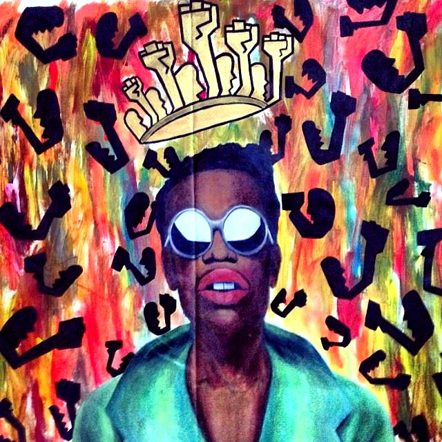

Barrett Keithley
As a young boy interested in art, poetry and vibrant colors, Barrett Keithley struggled not only with his identity, but also with his role as an artist as a young boy growing up in the Wild Hundreds, an area on the south side of Chicago known for its violent reputation. He fueled this privately into his writing and painting growing up. It wasn’t until he was much older that he began to truly cultivate his craft. Tackling dark emotional subjects, he uses colors and intricate designs and composition to juxtapose the emotions he fuels in his pieces, with the feelings he wishes to evoke from the viewer, and figures upon figures within a single piece to instill a sense of community, something that he holds dear.
A king who has earned his crown, Keithley has dedicated himself to his work, often painting until the wee hours when everyone is sleeping, and his community through teaching art to youth. With humble street graffiti beginnings, and youthful aspirations inspired by his older siblings, he has become the artist and man he is today. He notes renaissance authors such as James Baldwin and Langston Hughes as some of his biggest inspirations, and this definitely shows in his work and his demeanor. Whether it be his exploration of the female figure and form in his solo show entitled “Her” or his large scale pieces resembling Keith Haring figurines, with an afrofuturistic twist, or his depiction of masculinity, Keithley is definitely one of the prominent rising artists in Chicago.
amfm: You grew up in Chicago on the south side that is called the Wild Hundreds. What was it like growing up there and being into art and poetry? How did growing up there help mold you and your work and some of it's themes? How was art an outlet for you? Were you creating as a kid?
keithley: I grew up in a Neighborhood called Morgan Park. Now, one of the things that makes Morgan Park so unique is the two neighborhoods it finds itself in between. On the eastside of Morgan Park is Roseland, which is arguably one of the poorest and violent neighborhoods in the city. On the westside of Morgan Park there’s Beverly, which is undoubtedly one of the richest neighborhoods in Chicago. Growing up that was my life. Living in between two realities one considered good and the other evil. (That is also a matter of perspective.) In my neighborhood, because it was in between those two paradigms it was neither the best place to live nor the worst. We just lived. My family has been living in that area for over 100 years, I’m quite sure that at the age of 96 years old my grandmother is one of the oldest people living there. My family and I have a lot of history in The Hundreds. Growing up there molded my work into what it is today and is the foundation of my work as it constantly evolves. One of my older brothers used to sketch a lot and draw so he would let me copy his drawings until I was able to draw on my own, but still as a child and mostly my teenage years all I did was write. A lot of my friends didn’t know I was into poetry, I only recited my work during show and tell at school. I only painted one thing, but was called gay for making it so colorful, therefore I never painted again until I was 20 years old. I always considered myself a creative and was always creating something. My dad and both my grandfathers would have me at a young age helping them build decks, shacks, hang drywall, or whatever the case. I was notorious for playing with Lego sets, breaking apart my toys and constructing new ones, and working on some type of science experiment. It’s weird because I was such a private kid and really the only people that knew the extent of my creativity were my siblings. My parents were actually shocked when I started painting, they really had no idea until I begin showing them.
amfm: You said you are greatly inspired by the writings of Langston Hughes and James Baldwin. What about these two writers speaks to you? How does this show in your work? Do you have a favorite piece by one or both of them that is the most influential to you and why?
keithley: Langston Hughes, James Baldwin, and also James Weldon Johnson were such great influences in my life as a child growing up because their books were the first I begun reading. One of my eldest brothers was very big into poetry and reading; he actually gave me my first books to read which were: “The Selected Poems of Langston Hughes,” “Go Tell it on The Mountain,” and “The Autobiography of an Ex-Colored Man.” I was about seven when I started reading Langston Hughes poems, he was the first artist I looked up to. Although I could not actually relate to the era in which he spoke of, I was still able to relate to his poetry and the other writers because at the core of their subject matter they spoke about overcoming darkness and evil to prevail in the light and goodness. I was able to relate to that because of my environment and the chaotic energy I felt in my household and neighborhood with my family at times. I’d spend hours in my room rewriting Hughes poems and my brothers until I began writing my own. In fact all of the authors, I related to Baldwin because during his era he was very assertive about all of the injustices he saw and was able to do it on a platform where he reached not only the ears of black people in America, but even white people and folks from all over the world. Johnson spoke deeply to me when I read his book because growing up in my neighborhood I was about the lightest kid walking around and all the kids were darker than me. I’d get called white so much that I actually thought I was until my mother set me straight. I told her I wanted a black mommy and she looked at me and said “what the hell am I?” I knew then that I was black, just another hue, but no different from the rest. All in all, Langston taught me how to flow and be fluid with my message, Baldwin taught me that it is okay to be assertive in your beliefs, and Johnson taught me that I am who I am, because I choose to be who I am. All of this shows in my work now because I use characters; which are extensions of who I am, to create stories and give context for people trying to deal with whatever darkness they may have.
amfm: You tackle some pretty heavy things and dark subjects, yet you do it with such vibrancy and color. How do the two juxtapose one another? How do you stay colorful in a world that can be seen as dark?
keithley: I am able to tackle such subject matter with such color and vibrancy because I am telling a story. Much like Hughes, Baldwin, or Johnson would use words to emphasize color, I can actually use that vibrant color juxtaposed with an image that is heavy in subject matter to make my audience feel it on a deeper level. Another thing I think about when I use color is comedy. I grew up watching a lot of comedy, cracking jokes with my friends, and entertaining my family with my goofy behavior. I think of color as somewhat entertaining, not because it actually makes you laugh or what not, but because at its deepest level it removes your mind from whatever you’re thinking about and replaces it with joy, happiness, pleasure, love, and even deeper thoughts. That’s why I love color so much, it helps me capture my audience in such a way that they can soak in the message of the art the way they perceive it and enjoy it. Rather a person hates my work or loves it, at the end of the day that person will feel something and that’s my aim. I want my audience to feel!
amfm: You often include many faces or figures jumbled and close together in your work to represent this idea of "community." Why is community important to you? How would you describe community and how does it influence your art or your ability to make art?
keithley: Community is important to me because if I didn’t have a community growing up I wouldn’t be the man I am today. I grew up old school, meaning my parents whipped me, my brothers whipped me, my teachers whipped me, auntie’s whipped...I’m not advocating abuse, but what I am saying is that all of my elders taught me discipline and provided me with structure. I first learned what a community is through my elders, then I had the influences of my friends. Even though the area of my neighborhood I grew up in and Roseland gets a bad rep for the violence, there is still a sense of community and pride. As a kid, my friends and I had bike clubs, we called them bike gangs, we played hide and go seek - it quickly turned into hide and go freak. Like I said before, we had the good and the bad. On some days one outweighed the other, but through it all we had our family, friends - we had love. Love is community. Love is my message and I teach that through my paintings by the jumbling of my characters all together because it represents a community.
amfm: You talk about the struggle to get where you are, what were some of the biggest obstacles you had to overcome and how did you persevere?
keithley: The biggest struggle I’ve had to overcome has been getting over myself. We all have these self-limiting beliefs about ourselves and at some point the goal is to shake it off. Some of us do it earlier and some of us it happens later, but at the end of the day in order for us to reach our fullest potential we have to shake it off. All of our negative concepts of ourselves live through that image we hold in our minds; it is the stem to all of our problems and defeats.
|  |
For more from Barrett Keithley:
photo credits: barrett keithley (facebook)